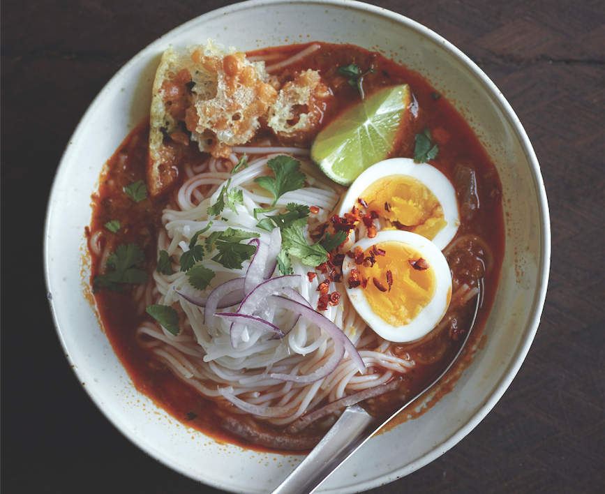

Home
Mohinga

Description
Mohinga is probably the most well known Burmeses food throughout the world.
Only a few has tasted it. If you can't come to Burma yet, at least you could enjoy it
by making it yoursefl. Although, I recommend coming down here and tasting the autentic flavour which I gurantee,a choice you won't regret.
Ingredients
- 1/2 cup uncooked jasmine rice
- 3 quarts water
- 3 stalks lemongrass, cut into 3-inch pieces
- 1 2-ounce piece ginger (unpeeled), thickly sliced crosswise into slabs
- 5 bay leaves
- 1 1/2 teaspoons ground black pepper
- 1/2 teaspoon ground white pepper
- 2 teaspoons salt
- 1 scaled and gutted catfish (about 3 pounds)
- 1/3 cup vegetable oil
- 1 stalk lemongrass, minced
- 1/4 cup minced garlic
- 3 tablespoons minced ginger
- 1 tablespoon paprika
- 1 teaspoon turmeric
- 2 red onions, diced into 1/2-inch pieces (about 3 1/2 cups)
- 1/4 cup fish sauce
- salt
- 10 ounces fine round rice noodles
- 6 hard-boiled eggs, sliced
- 12 Yellow Split Pea Crackers, broken into pieces
- 1/2 cup chopped cilantro
- 2 limes, cut into wedges
- Thinly sliced red onions
Steps
- Heat the oven to 350°F. Spread the rice across a rimmed baking pan and bake, giving the pan an occasional stir, until the rice is an even golden color and aromatic, 20 minutes. Cool to room temperature and then pulverize in a clean coffee grinder.
- To make the broth, select a large wide pot that will fit the catfish comfortably with room to spare. (An 8-quart pot works well.) Add the water, lemongrass, ginger, bay leaves, black and white pepper, and salt and bring to a boil. Lower the heat and simmer for 15 minutes.
- Carefully lower the fish into the pot. The fish may not be completely covered in water, but that’s okay. Bring the pot to a brisk simmer, lower the heat, and cook gently for 15 minutes. Using tongs, carefully turn the fish over or at least rotate it slightly to cook the side that was sticking out of the water. Simmer for another 5 minutes or until the fish flesh pulls away cleanly from the bone. Using tongs and a spider or slotted spoon, lift the fish out of the broth and transfer to a bowl. Turn off the heat and let the broth sit on the stove.
- When the fish is cool enough to handle, pull off the skin and discard. Separate the cooked fish from the bones, trying to keep the skeleton (or skeleton portions if the fish is cut in pieces) intact. Set aside the cooked fish. Return the skeleton (including head and tail) to the pot.
- Bring the pot to a boil. Lower the heat and simmer for 15 minutes. The broth should have a mild ginger-lemongrass flavor and be slightly cloudy. Strain the broth through a fine-mesh strainer. You will have about 10 cups. Give the pot a quick rinse (when it’s cool enough to handle), and return the broth to the pot.
- In a small bowl, whisk together the powdered rice and a ladleful of the broth until no lumps remain. Stir into the broth. Bring the broth to a simmer and cook, stirring often, until it starts to barely thicken, about 5 minutes. Turn the heat to low and cook the broth at a gentle simmer while preparing the soup.
- To make the soup, in a wok or large skillet, heat the oil over high heat. Add the lemongrass, garlic, and ginger and stir-fry for 1 minute. Add the cooked fish, paprika, and turmeric, mashing the fish gently with a spoon to turn it into a coarse paste, and cook for about 1 minute. If you see any errant bones, pick them out.
- Pour the contents of the wok into the broth and bring to a brisk simmer. Add the red onions and fish sauce. Simmer for 5 minutes more or until the flavors start to come together. Taste the broth: it should be on the salty side because the noodles will not have any salt. If it’s not that salty, add some salt or fish sauce. (At this point, the soup can be cooled and served the next day.)
- To cook the noodles, bring a pot of water to a boil. Add the noodles and cook, stirring often with tongs or chopsticks to prevent sticking, for 5 to 6 minutes or until softened. Turn off the heat and let the noodles sit in the water for 3 minutes. Drain in a colander, rinse under cool running water, and give the colander a shake to remove excess water. If not serving right away, mix some canola oil into the noodles with your hands to keep them from sticking together. (You can also cook the noodles in advance and soak them in warm water before serving.)
- To serve, divide the noodles among the bowls. Ladle the soup over the noodles and serve the hard-boiled eggs, crackers, cilantro, and lime wedges alongside.